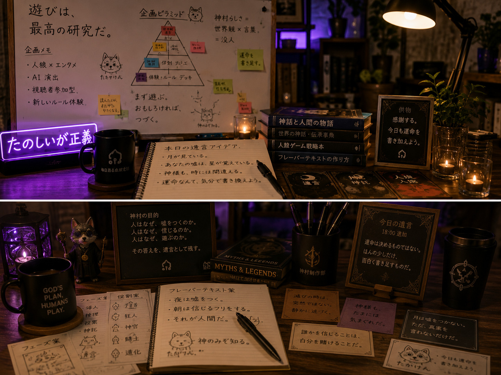
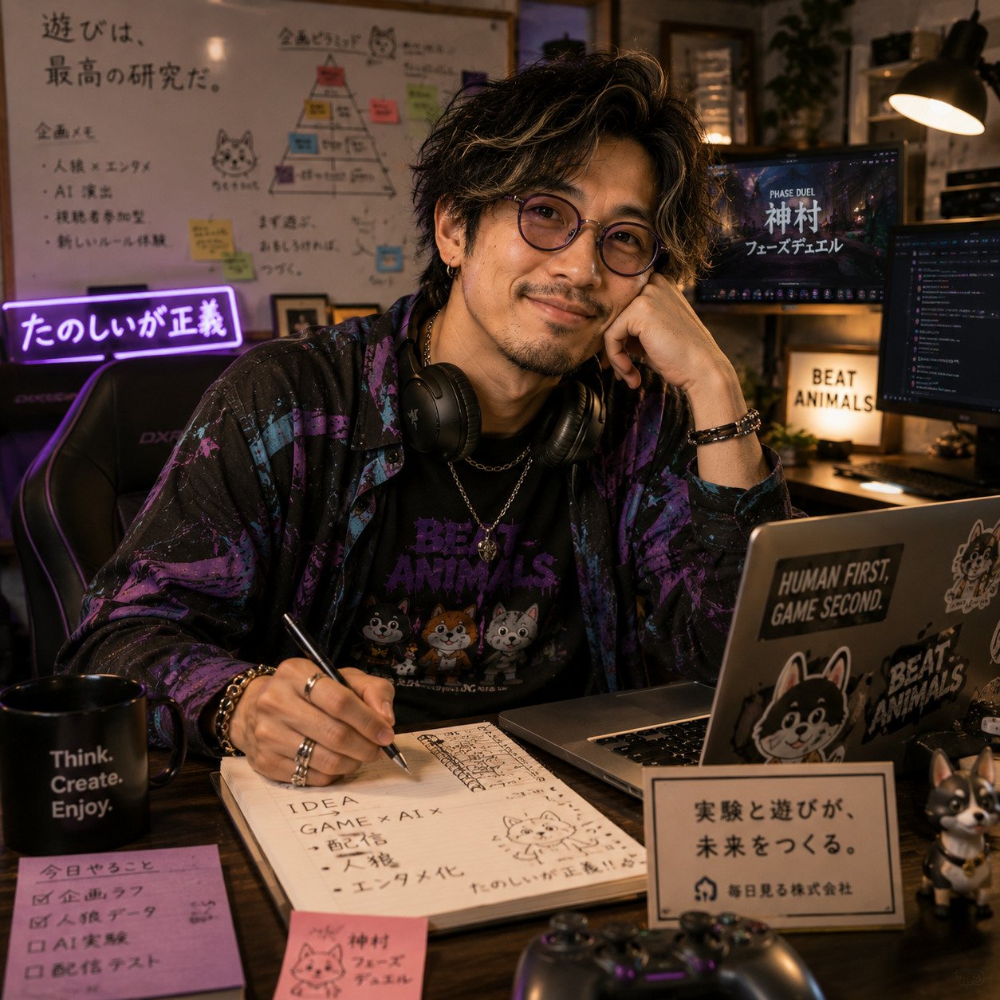

Image Item
神託ノートとゲーム案


ゲーム制作部
Takaken
たかけんは、ゲーム制作部長としてゲーム関連の世界観・演出・遊び心を整えるディレクター的存在です。企画をただのルールで終わらせず、プレイヤーの記憶に残る空気や言葉へ変えていきます。
Image Item

話し方は落ち着いているが、ゲームの話になると急に熱が入る。
企画の種を見つけるのが早く、何気ない雑談からゲーム案を生み出す。
面白そうな案を否定せず、まず遊べる形まで膨らませてくれる。
世界観だけでなく、ルールやプレイヤー体験まで見るようになった。
複雑になった企画を「結局、何が面白いのか」まで戻して整理してくれる。
プレイテストでは細かいミスより、遊んでいる人の表情を見ている。